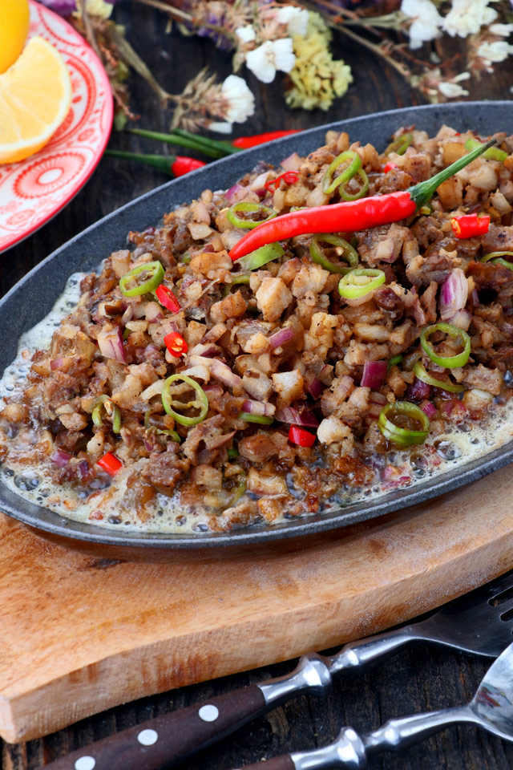

Sizzling Sisig

Sisig is a Filipino dish made from parts of pig head and chicken liver, usually seasoned with calamansi, onions and chili peppers.
It originates from the region of Pampanga in the island of Luzon. The process of making the popular present-day Kapampangan Sisig involves boiling and then grilling the meat.
It is then chopped into fine bits and the rest of ingredients are added. Grilled chicken liver is also added for flavor and creaminess.
It was originally a very sour dish because of all the vinegar and/or calamansi juice in it. It was not until later that pork or other meat was used.
Ingredients:
- 500 grams pork belly --sliced about half-inch thick
- salt and pepper
- 3 pieces chicken liver
- 1 red onion --finely chopped
- 1/2 lemon - or 3-4 kalamansi juice
- 1-2 chili peppers --minced or 1/4 tablespoon chili flakes
- 1/2 tablespoon soy sauce
- 1/8 teaspoon ground black pepper
Instructions:
- Season pork belly slices with salt and pepper. Let it marinate for at least 30 minutes.
- Grill pork belly and chicken liver until well done. Pork skin should be crispy.
- Once grilled, chop the pork belly and chicken liver into small fine pieces.
- In a bowl, combine the chopped meat, onions, lemon juice and chili pepper. Season with soy sauce and pepper.
- Warm it in a pan with a bit of oil if desired. Alternatively, heat a sizzling plate and add some butter or margarine.
Add the Sisig and serve while still sizzling hot.